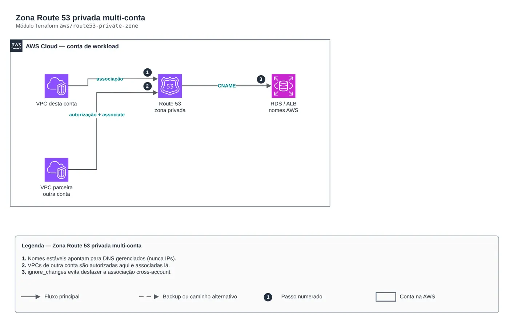
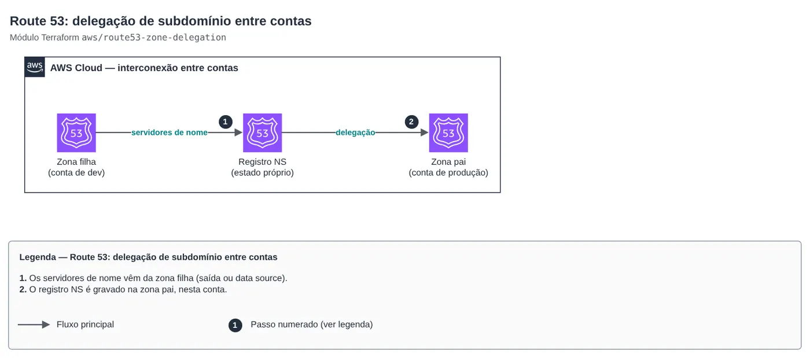

AWS · AWS na prática
Route 53 entre contas: DNS privado, híbrido e delegação de subdomínio
Nomes estáveis para o que é interno, Resolver para o on-premises e uma zona pública por conta, sem uma depender do ciclo de vida da outra.


01O problema
Em ambiente multi-conta, cada time cria sua zona, ninguém resolve o nome do outro, o datacenter não enxerga nada da AWS e a zona pública da empresa vira um arquivo que só uma pessoa sabe editar.
02A solução
Zonas privadas com nomes estáveis para banco, cache, ALB e serviços por IP fixo, associadas às VPCs da conta e autorizadas para VPCs de outras contas. O Route 53 Resolver, na conta Network, faz o DNS híbrido com o on-premises e com outras nuvens, por endpoints de entrada e saída e regras compartilhadas por RAM. Cada conta tem a sua zona pública (dev.example.com na conta de dev), com ACM curinga e CAA, e a delegação para a zona pai fica num estado separado.
Como montar
- Crie a zona privada na conta dona do serviço e associe às VPCs locais.
- Autorize a associação para as VPCs de outras contas (ou de parceiros) e associe do lado delas.
- Na conta Network, suba os endpoints do Resolver e compartilhe as regras de encaminhamento por RAM.
- Crie uma zona pública por conta e ambiente, com certificado ACM curinga validado por DNS e registro CAA.
- Faça a delegação NS do subdomínio na zona pai num estado próprio, consumindo os name servers como saída.

O código
module "route53_private_zone" {
source = "git::https://github.com/Raphaelfcs/automacao_terraform.git//aws/route53-private-zone?ref=main"
zone_name = "interno.demo.local"
vpcs = { principal = { vpc_id = "vpc-0123456789abcdef0", region = "sa-east-1" } }
cross_account_vpcs = { parceiro = { vpc_id = "vpc-0fedcba9876543210", region = "us-east-1" } }
cname_records = { db = "demo.abc123.sa-east-1.rds.amazonaws.com", api = "internal-api-123.sa-east-1.elb.amazonaws.com" }
a_records = { gateway = ["10.20.10.10", "10.20.11.10"] }
tags = local.tags
}03Discussão
Módulos Terraform usados:
aws/route53-private-zoneZona Route 53 privada multi-contaaws/route53-public-zoneRoute 53: zona pública com certificado curingaaws/route53-zone-delegationRoute 53: delegação de subdomínio entre contasaws/network-hubConta Network hub-and-spoke
FinOps: onde está o custo
| Componente | O que pesa | Alavanca |
|---|---|---|
aws/route53-private-zone | Valor fixo mensal por zona hospedada e por milhão de consultas. | Uma zona por domínio de serviço, não uma por aplicação. |
aws/network-hub | Hora por ENI de endpoint do Resolver. | Endpoints centralizados na conta Network, compartilhados por RAM, em vez de um par por VPC. |
Os valores variam com região e volume; a tabela mostra onde olhar primeiro.